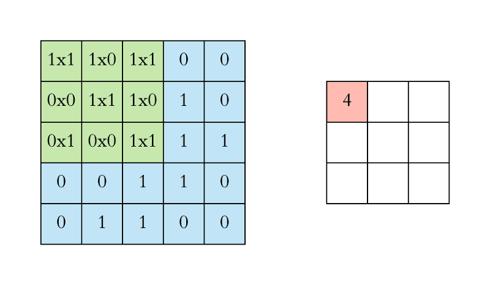

딥러닝이 이미지를 처리하는 방법
1. Classification
2. Segmentation
둘은 어떻게 다를까?
Classification (분류):
목표: 이미지를 사전 정의된 클래스 레이블 중 하나로 할당하는 것.
접근 방식: 이미지의 전체적인 내용을 이해하고, 이미지에 포함된 개체 또는 속성을 식별하여 해당하는 클래스로 분류하는 것.
예시: 고양이, 개, 자동차, 비행기 등과 같은 카테고리로 이미지를 분류하는 작업.
Segmentation (분할):
목표: 이미지를 픽셀 단위로 그룹화하여 의미 있는 영역으로 분할하는 것.
접근 방식: 이미지의 각 픽셀을 개별적으로 분석하고, 픽셀을 객체 또는 배경으로 할당하여 영역을 정의하는 것.
예시: 이미지 내의 개별 객체 또는 영역을 정확하게 분리하기 위해 사용되는 작업 (예: 주요 객체 분할, 의료 영상에서 종양 분할).
분류가 사용되는 곳은?
https://blog-ko.superb-ai.com/use-of-image-classification-technologies-in-everyday-life/
일상 속에서 활용되는 이미지 분류 기술Image Classification (이미지 분류) 기술은 AI를 이용한 대표적인 기술입니다. 2012년 이미지 인식 경진 대회에서 딥러닝 모델이 최초로 우승을 차지하고, 2016년에는 무려 96%의 정확도를 달성하며 이미blog-ko.superb-ai.comCNN을 정확히 알기 전, 컴퓨터가 받아들이는 이미지의 개념부터 이해해보자
이미지를 이용한 딥러닝
https://www.insilicogen.com/blog/346
人Co BLOG :: 이미지를 이용한 딥러닝의 개요Trackback URL : 이 글에는 트랙백을 보낼 수 없습니다 Trackback RSS : https://www.insilicogen.com/blog/rss/trackback/346 -->www.insilicogen.com
CNN 시각화
https://www.youtube.com/watch?v=YRhxdVk_sIs
그렇다면 CNN 모델의 근본, ResNet
[논문 리뷰] ResNet 논문 리뷰+) ResNet이 1000장 정도 쌓이면 성능이 저하되는 문제를 해결하기 위한 추가 연구는 글 맨 아래에 있음 ResNet 마이크로소프트 팀이 소개한 ResNet 모델입니다. Residual 이라는 새로운 방법이 도입되었imkmsh.tistory.com
이제 Competition에 참여해보자
https://dacon.io/competitions/official/236082/overview/description
도배 하자 유형 분류 AI 경진대회 - DACON분석시각화 대회 코드 공유 게시물은 내용 확인 후 좋아요(투표) 가능합니다.dacon.io베이스라인 코드
https://drive.google.com/file/d/1_ULkFzxemK2JPqSLWJRnoMLm3Bh15nYT/view?usp=sharing
[Pytorch_Baseline]_EfficientNet B0을 활용한 이미지 분류 모델.ipynbdrive.google.com